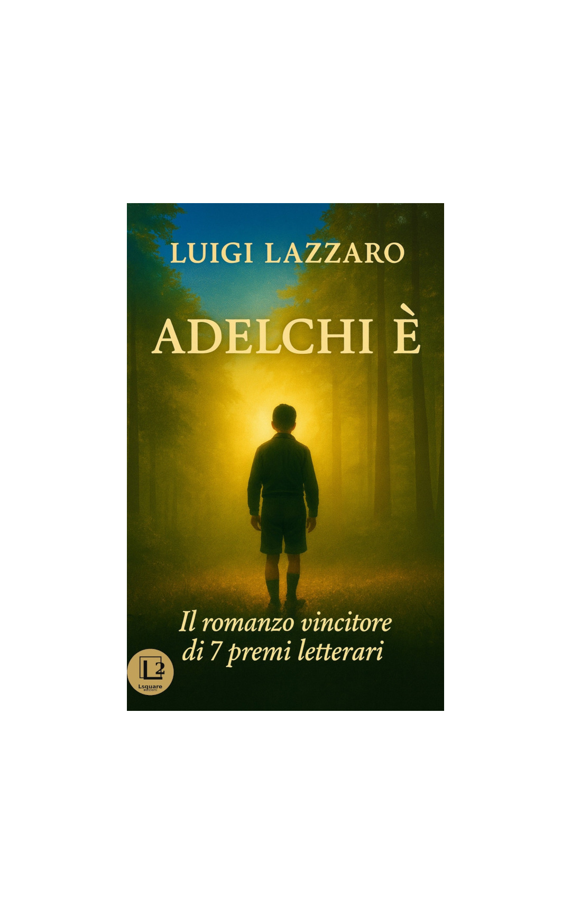
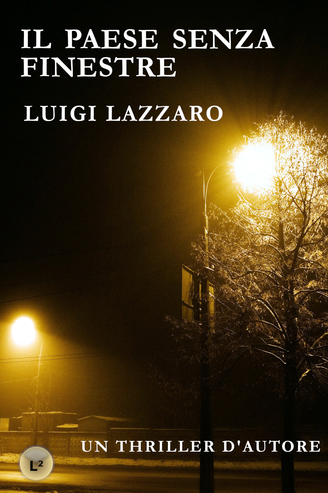

Adelchi È
Romanzo di formazione
Un ragazzo apparentemente fragile, una coscienza tormentata, una colpa che affonda le radici nel passato.
Romanzi e racconti pubblicati in modo indipendente, tra noir, thriller psicologico e narrativa contemporanea.

Romanzo di formazione
Un ragazzo apparentemente fragile, una coscienza tormentata, una colpa che affonda le radici nel passato.

Un thriller italiano dai risvolti gotici
Una vicenda oscura che si dipana in un paesaggio infernale in cui i personaggi sembrano grottesche caricature di sé stessi nell’attesa della loro piccola apocalisse.

Raccolta di racconti che diviene romanzo corale
Scrive il critico d’arte, giornalista e artista Claudio Fiorentini: “Ventidue Vite contiene alcuni tra i migliori racconti pubblicati negli ultimi anni in Italia… Ottima narrativa!”.

Romanzo distopico
«Tutti dicono “Mila la zingara è una puttana. Mila di Codra è una magara ma nessuno si chiede mai perché Mila di Codra è puttana e magara”». Quest’affermazione di Mila è un atto di accusa contro una società che troppo spesso, ancora oggi, considera la donna una mera proprietà maschile.

Romanzo thriller / Hard boiled
Una storia senza eroi che narra dell'investigatore privato Michi Martello (chiaro riferimento al mitico Mike Hammer di Mickey Spillane, il re del noir americano), un cinquantenne cinico e disincantato, un duro con un matrimonio fallito alle spalle e un rapporto difficile con i suoi due figli. In lui albergano luci e ombre, un animo debole con le tentazioni e colmo di rimorsi per non avervi opposto sufficiente resistenza; un antieroe che vive di espedienti, uno sconfitto che improvvisamente ritrova la voglia di vivere in un amore adolescenziale per la bella e giovane Raissa, un sogno che lo coinvolgerà in una pericolosa indagine che lo porterà sull'orlo della caduta.

Romanzo psicologico-esistenziale
Al centro del romanzo c'è una riflessione sul dolore e sulla difficoltà di accettare la perdita, un’indagine sui luoghi dell’anima. Il protagonista è costretto ad affrontare la morte, il fallimento delle aspettative e la difficoltà di ricomporre la propria esistenza.

Thriller internazionale
Una spy story ben costruita, interessante e coinvolgente, che ci porta nel mondo del terrorismo islamico.